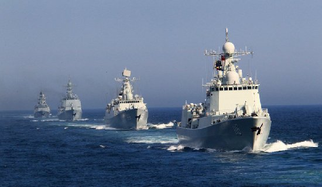
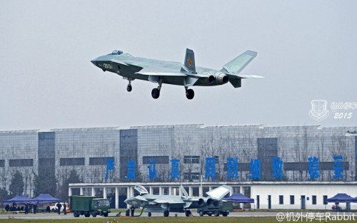

标准盒模型
怪异盒模型
 中国自行制造的航空母舰正在紧张的施工中，在今年内极有可能下水进行舾装工作。根据中国军事专家的相关分析，中国最新的航空母舰因为得益于中国具备的完整航母工业体系，使得中国航空母舰的战斗力得到成倍的提升。 航空母舰作为一种国家力量象征的具体承载产品，寄托了国人的梦想与诸多希寄。目前中国已经入役的一艘“辽宁号”训练舰。 所采用的母体是苏联时代制造的“瓦良格”号自主翻修的。但是由于苏式滑跃起飞模式的载机巡洋舰的发展思路，使得辽宁舰在设计上存在很多跟现代战场要求并不相符的地方。 所以大家更期待在我们完全自己制造的第一艘完全国产的航空母舰上所有改观，如果要是能进行相应的修改和完善。中国自行制造的第一艘新航空母舰的战斗力或比“辽宁舰”提升超过一倍还余地。
 近日，据国内某网站爆料，中航工业成都飞机公司通过小批量生产制造出的两架歼-20隐形战斗机进行了升空试飞，如果传言属实，中国歼20将赶在俄罗斯T50前面，成为世界上第三款服役的第五代隐身战机。因此，有俄罗斯媒体表示，解放军隐身战机的发展速度，已经让俄罗斯感到望尘莫及。 据说这创造了该机单日试飞架次的纪录，从图片中看，新出现的两架歼-20为深灰色涂装，在机身和机翼下方出现中国空军标识。这说明这两架歼-20很可能为预生产型，离该机正式入役已经非常近了。至今，成飞公司已经制造了12架歼-20的原型验证机和预生产型机。如果这些飞机能在2017-2018年间服役，中国军队将成为周边国家中首批装备的第5代战机，先期服役意味着歼-20在空中对峙中占据代差优势。